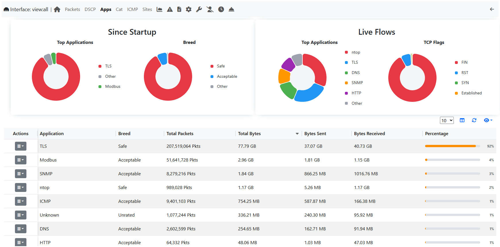
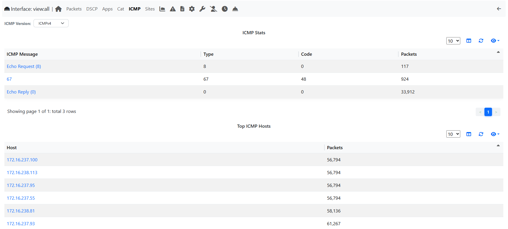
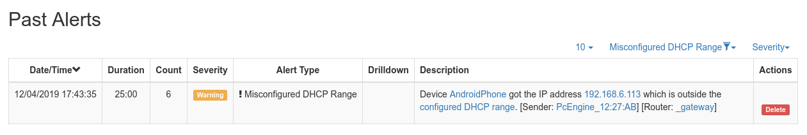

Details
Note
See the available Network Interfaces types here

The Home View of the Interface Details Page
The views of the interface are tabs right below the page title: Overview, Networks, Protocols, Applications, Sites, Historical Data, Traffic Profiles, Recording, Report and, for administrators, Settings. Each tab is discussed below. The alerts of the interface and its service and periodicity maps open from the Overview. The internals of the interfaces (hash tables, periodic activities, checks) are in Health > Interfaces Status > Internals.
Only the tabs that apply to the interface are listed: for example Networks only for the interfaces that capture packets. A tab that applies but cannot be used yet is shown greyed out: move the mouse over it to see why and how to enable it (e.g. Historical Data needs the interface timeseries, enabled in Preferences > Timeseries).
Overview
The Overview shows first what matters, from top to bottom:
The interface: its name, its Id (the number ntopng gives to each interface), its type (e.g. PF_RING, ZMQ), speed and MAC address, and whether it is Active or Paused. Administrators can pause the monitoring with Pause (while paused, its traffic is not processed) and resume it with Resume. The ⋮ button holds the other actions: Live capture (download a pcap file of the next seconds of traffic, optionally only the packets matching a BPF filter), the service and periodicity maps, Reset drop counters and Reset all counters (the counters restart from zero, the historical charts are kept).
What needs attention: shown only when something is wrong, e.g. packets dropped by the interface, messages from nProbe lost, flows not exported to the database, alerts dropped because the alerts queue was full. Each item links to its chart when there is one.
Key figures: throughput (with the packets and the new flows per second), traffic since the last reset, active hosts, active flows and engaged alerts (alerts still in progress). Click a figure to open its page: the charts, the applications, the hosts, the flows or the alerts of the interface.
Throughput: sent (above the line) and received (below it) in the last minutes; move the mouse over the chart to read the values of a moment.
Traffic: how the traffic splits between sent and received, local and remote hosts, IPv4, IPv6 and the other protocols.
Top local hosts and Top remote hosts: the five local and the five remote hosts with the most traffic (updated every minute). Click one to open it, or All hosts for the full list.
Top applications: the applications with the most traffic since ntopng started. Click one to see its active flows, or All applications for the full list.
Source of the traffic: for an interface that captures packets, its family, MTU, speed and dropped packets; for an interface that collects flows (connections) from nProbe, the collected and discarded flows, the messages received and lost and the connected nProbe instances; for a syslog interface, the collected and handled logs.
Technical details (closed, click to open): the system name of the interface, the behaviour anomalies (how many times, since ntopng started, the flows or the score of a host went out of their expected range), the disk space it uses, the flow export to the databases, the traffic recording windows and, for the administrators of a ZMQ interface, the encryption key to add to the nProbe configuration.
The figures are updated every few seconds. The name of the interface can be changed in the Settings tab.
Networks
For the interfaces that capture packets: the IP addresses of the interface (read from its configuration; click one to open its host) and the broadcast domains (the local networks seen in the ARP traffic), each with the number of ARP packets seen. Click a domain to see its hosts. A domain marked Ghost does not belong to any network of the interface addresses: a device may be misconfigured. Administrators can forget the domains seen so far with Reset Broadcast Domains: they are learned again from the traffic.
Protocols
TCP Packets Analysis: the TCP packets resent (retransmissions), received out of order and lost, also as a share of all the packets.
Packet distributions: how the packets split by size, by IP version, by TCP flags, by DSCP class (the priority set in the packets) and by ARP type (requests and replies). The size is not shown for the interfaces that collect flows; DSCP and ARP need an interface that sees the MAC addresses.
The figures are updated every few seconds.
Applications
Applications page provides the pie charts and the table of the nDPI-detected protocols for the selected interface. Choose Group by Application or Category (the groups of applications, such as Web or Streaming) to see the traffic by application or by category.
In the two top pie charts ntopng shows the application distribution and its categorization. The bottom pie chart shows nDPI-detected applications for currently active flows. All labels are clickable and point to detailed statistics pages. Belo pie charts there is a list of protocols detected with the corresponding total traffic, both in absolute terms and as a percentage of the total traffic. By selecting any Application Protocol, it is possible to display a statistics page with temporal charts for that protocol. Similarly, by clicking on the magnifying lens icon, it is possible to display all active flows for that protocol.

The Protocols View of the Interface Details Page
ICMP
At the bottom of the Protocols tab: the ICMP messages of the interface (IPv4 or IPv6) and the hosts that sent and received the most ICMP packets.

The ICMP View of the Interface Details Page
Sites (Professional Version)
The web sites most visited by the local hosts of the interface (at most 20), seen in their HTTP, TLS, QUIC and DNS traffic. Choose the time range: now, the last 5 minutes, one hour of today or yesterday. Needs the creation of the top visited sites enabled in Preferences.
Statistics
Statistics page provides historical traffic statistics for the selected interface. The user can choose to filter statistics on a protocol basis and display data in several formats (e.g., bytes, packets, flows, and so on). In the Professional Version of ntopng, traffic for interface views in shown as stacked per physical interface. Physical interface visualization can be toggled by clicking on the coloured dot just left of interface name.
The time series span can be adjusted by selecting values from 5 minutes up to 1 year. Moreover, drill- down is possible by clicking on the time series itself. Every click zooms the chart in, centering the time series around the clicked point.
In addition, time series shown can be chosen via the dropdown menu labelled ‘Time series’. For example, it is possible to visualize all or just one protocol, traffic, packets, active hosts and flows, and so on. Ntopng is VLAN aware, hence if several VLANs are detected, traffic is accounted also on a VLAN basis.

The Dropdown Time Series Menu in the Statistics View of the Interface Details Page

The Statistics View of the Interface Details Page (Professional Version)
Historical interface minute top talkers are shown on the right of the page, and get refreshed automatically when the mouse moves over the chart.
Traffic Profiles (Professional Version)
The traffic of each traffic profile (the flows matching its filter) on the interface, updated every few seconds. Click a profile to see its charts. Administrators open Manage profiles to add or change them. See later in this manual for more information.
Recording
Administrators record here the traffic of the interface with n2disk (continuous traffic recording), in three views: Status (running or failed, the time range on disk, the n2disk log), Settings (disk space, capture filter, smart recording, storage utilization) and Jobs (the traffic extractions and their pcap files, Enterprise M). The tab needs n2disk installed: on the interfaces that capture packets it is otherwise shown disabled, with the reason. On a view only the jobs are shown. See ContinuousTrafficRecording for the details.
Settings
Administrators change here the settings of the interface. Only the settings that apply to the interface are listed. After a change a bar asks to Save changes or to Discard them.

The Settings View of the Interface Details Page
General
Custom Name: A name shown instead of the system one (at most 64 characters, without < > “ ‘ `). Leave it empty to show the system name.
Interface Speed: The speed of the interface in Mbit/s. Typically ntopng detects it; leave it empty to use the detected one.
Scaling Factor (interfaces that capture packets): Packets arriving on the interface could have been sampled upstream, for example by a packet broker or another device. This setting tells ntopng the sampling rate, to scale the traffic up.
Traffic
Mirrored Traffic (interfaces that capture packets): Turn it on when the interface receives the traffic of a mirror/SPAN port. Typically such interfaces have no IP address. ntopng then skips the activities that cannot work on mirrored traffic, such as the network device discovery. With mirrored traffic you can list the Gateway MAC addresses, used to tell the direction of the traffic.
Dump Flows to Database: Whether the flows of this interface are stored in the flows database (-F startup option). Turning it off on some interfaces reduces the disk load. A change needs a restart of ntopng.
Create Interface Top Talkers: Whether the top talkers (the hosts with the most traffic) of the interface are kept, as shown in the ntopng report.
Automatic Reports (Enterprise L, when enabled in Preferences): Whether the traffic reports of the interface are created automatically.
Companion Interface: Another interface (e.g. a syslog one) whose events and alerts are bound to the traffic of this interface.
Traffic Recording Provider (when n2disk instances are installed): Which recorder stores the traffic of the interface: ntopng itself or an n2disk instance.
Hosts
Local Broadcast Domain Hosts Identifier: Determines if Local Broadcast Domain hosts whose IP address is inside a configured DHCP range are identified by their MAC address or IP address, also in their timeseries. In a DHCP network the IP address of a host usually changes, so the MAC address identifies it better. Mirrored traffic and the interfaces that collect flows always use the IP address.
Periodic Interface Network Discovery: Whether ntopng periodically discovers the devices of the network of this interface. The frequency is set in Preferences (15 minutes by default).
Traffic disaggregation
Dynamic Traffic Disaggregation: Splits the traffic of the interface into dynamic interfaces, as explained in the Interfaces Disaggregation section.
Duplicate Disaggregated Traffic: When the Dynamic Traffic Disaggregation is set, normally ntopng reports the traffic only on the disaggregated interfaces, hence the main interface has no traffic. With this option the traffic is also reported on the main interface.
Push Alerted Hosts to PF_RING: Pushes the IP address of the alerted hosts to PF_RING through a Redis queue, to filter or further analyse their traffic with third party tools (e.g. an IDS).
DHCP ranges
In Settings, for the interfaces that see the DHCP traffic. When a DHCP server is active in the network monitored by a network interface, it’s advisable to configure in ntopng the ranges of IP addresses which such server can assign: Add range, then type the first and the last IP address, and save with the other settings.

When a DHCP range is configured, ntopng will monitor the DHCP traffic on the interface and report anomalous behavior. For example, it detects if IP addresses are assigned outside the configured range and generate an alert. This can happen, for example, if a new misconfigured network device is attached to the network.

Since DHCP responses are usually directed to a specific host, this setting is most effective when the interface monitors mirrored traffic.
Custom disaggregation (Enterprise M)
In Settings: the sub-interfaces that receive the traffic matching a filter (nBPF for the interfaces that capture packets, xnBPF for the ones that collect flows). Add sub-interface, give it a name and its filter; edit or delete one from its menu. A change is saved at once and needs a restart of ntopng.
Syslog producers
In Settings, for the syslog interfaces: the hosts that send their logs to the interface and the type of their logs (e.g. Suricata). Add producer, type its IP address or host name and choose the type; edit or delete one from its menu. A change is saved at once.
Mirrored Traffic
The Alert notifies the user to enable mirroring when the system detects RX only. The toast is going to show only if the user has RX-only traffic (TX traffic is 0 and RX is greater then 0). It’s still a dismissable toast (if you click dismiss, it’s not going to pop-up again) and you can jump to the interface configuration by clicking the link in the toast.